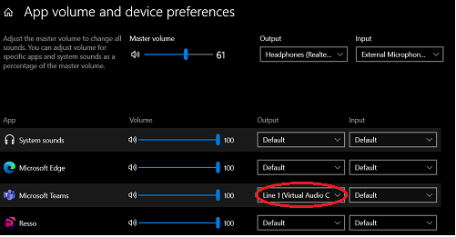

What is Your Choice of Recording ?
Now transcript only the OUTPUT SOUND from your system. Your input sound will be neglected automatically.
Majorly used for apps like Youtube, Amazon Music, Reeso and so on!
(Beta Version) Want to listen to a video or a meeting and transcript audio from another application? For Eg., Attend a Teams meeting and transcript a youtube video at the same time.
Yes it is now possible You are just few clicks away!
1) Install Virtual Audio Cable (https://vac.muzychenko.net/en/)
2) Change the output of your application choice to Line-1 in App volume and device preferences.
